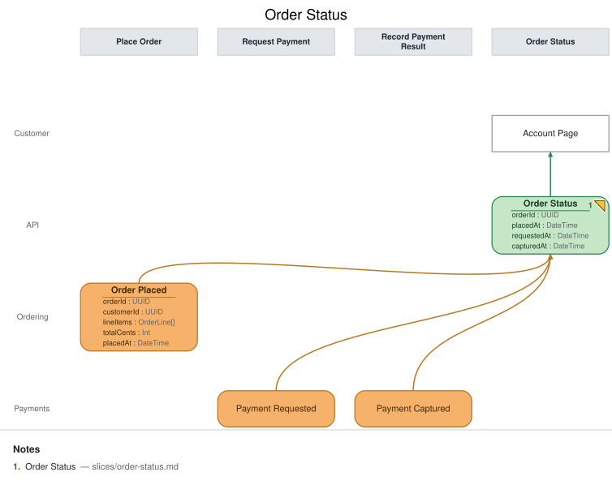

Order Status
State View · implemented
{kind=link}
| Kind | Name | Detail |
|---|---|---|
| view | Order Status | from Order Placed, Payment Requested, Payment Captured · { orderId: UUID, placedAt: DateTime, requestedAt: DateTime, capturedAt: DateTime } |
| ui | Account Page | @Customer |
Slice: Order Status

Intent
A customer wants to know where their order stands — placed, payment requested, or paid — without contacting support. This view closes the loop for every event this base model records about an order, so it's deliberately the last slice fed by all three ordering/payment events.
Trigger & Actor
No user action triggers this slice directly — it's a projection that updates automatically as
Order Placed, Payment Requested, or Payment Captured land for a given order. The
Customer consults it on demand via the Account Page.
Read Model / View
- View:
Order Statusbuilt from events:Order Placed,Payment Requested,Payment Captured - Consumed by:
Account Page@Customer - Freshness / consistency expectation: eventual — the customer's view lags event recording by ordinary projector latency; no synchronous read of the write side.
Invariants / Business Rules
- INV-OS-1: The fold is idempotent. Re-projecting the same source event (redelivery, replay,
projector restart) never creates a duplicate row or double-applies a field — each order's
status row is keyed by
orderIdand appears exactly once. - INV-OS-2: "Status" is never a separately stored or inferred field — it is derived purely
from which timestamp fields are actually populated (
placedAtonly ⇒ placed;+ requestedAt⇒ payment requested;+ capturedAt⇒ paid). There is no independentstatusenum that could drift out of sync with the underlying event facts, and no field is ever populated by inference, elapsed time, or assumption about what "should" have happened — only by the corresponding event actually landing.
Scenarios (Given / When / Then)
Order Placedlands — Given no prior row for thisorderId, WhenOrder Placedis projected, Then a newOrder Statusrow appears withorderIdandplacedAtpopulated,requestedAt/capturedAtabsent, reading as "placed" (INV-OS-2).Payment Requestedlands — Given an existing row withplacedAtset, WhenPayment Requestedis projected, Then that row is updated in place withrequestedAtpopulated, reading as "payment requested" — no new row is created (INV-OS-1).Payment Capturedlands — Given an existing row withplacedAtandrequestedAtset, WhenPayment Capturedis projected, Then that row is updated in place withcapturedAtpopulated, reading as "paid" — no new row is created (INV-OS-1).- Redelivered event (INV-OS-1) — Given a row already reflects a given source event, When that same event is redelivered to the projector, Then the row is unchanged — no duplicate row, no field double-applied, and the derived status (INV-OS-2) doesn't change either.
Alternate & Error Flows
- No payment yet: an order can sit indefinitely at "placed" (
requestedAt/capturedAtboth absent) if the payment-request automation hasn't run yet or payment hasn't been captured — the view shows this honestly rather than assuming a stuck request means failure. - Idempotency mechanism: same as
Open Orders— the projector folds byorderId, and each event sets only its own field(s), so replay/redelivery is naturally idempotent (INV-OS-1).
Non-Functional Requirements
- Security / authz: a customer may only view their own order's status (enforced upstream of this slice).
- PII & compliance: carries
orderIdand timestamps only; no payment instrument data. - Performance / SLA: none beyond ordinary interactive read latency for this demo.
Dependencies & Read Models Affected
- Upstream events this slice relies on:
Order Placed(slices/place-order.md);Payment RequestedandPayment Captured(payments slices, owned separately — field namesorderId,requestedAt,capturedAtmatch this view's fields by the shared field contract). - Downstream read models / slices affected: none — this is a terminal read model for the Customer persona in this model.
Open Questions
- Should a failed/declined payment show as its own status? Resolved (deferred): this
base model has no "payment failed" event yet — only requested/captured — so
Order Statusonly ever reads as placed / payment requested / paid. A failure-path event is out of scope for these three slices.